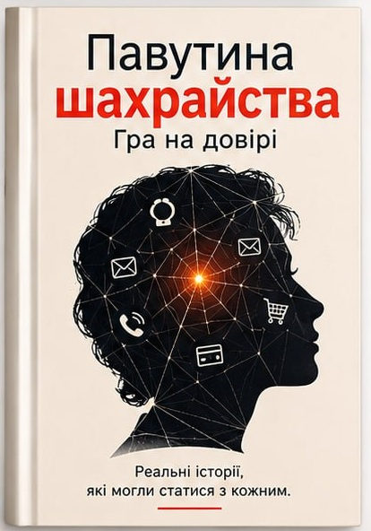

Соціальна інженерія
Як легко натиснути на правильну кнопку в чужій голові.
Новий психологічний трилер
Вона не розуміється на гаджетах. Але дуже добре відчуває людей.

РоманСюжет
Іноді шахрайство починається не з грошей. А з повідомлення: «Доброго дня, це терміново».
Олена звикла довіряти людям і тримати техніку на відстані. Та одного дня звичайний дзвінок запускає ланцюг подій, у якому кожна підказка веде до нової пастки.
Щоб врятувати те, що для неї важливо, їй доведеться навчитися читати між рядками, розрізняти турботу й маніпуляцію та зіграти за правилами тих, хто ніколи не грає чесно.
Головна героїня
Олена — уважна, жива і трохи старомодна. Їй комфортніше з паперовим блокнотом, ніж із новим застосунком. Але саме її здатність слухати, помічати деталі й сумніватися стане головною зброєю.
Пройти її шлях →Більше, ніж трилер
Як легко натиснути на правильну кнопку в чужій голові.
Те, що ми знаємо тілом, ще до того, як усвідомлюємо.
Навіть після помилки можна повернути собі голос.
Найкращі шахраї не вигадують брехню. Вони знаходять у ній маленьку частину правди.
— з роману «Павутина шахрайства»
Твоя черга
Перші сторінки вже чекають. Заходь у павутину — якщо готова побачити, хто її сплів.
Уривок
Телефон задзвонив о 19:42. Олена подивилася на незнайомий номер і вже хотіла скинути виклик, коли побачила знайоме ім’я.
«Візьми слухавку», — сказала вона собі. І саме в цю мить зробила перший крок у павутину, якої ще не бачила.
Розділ 01 · Перше повідомлення